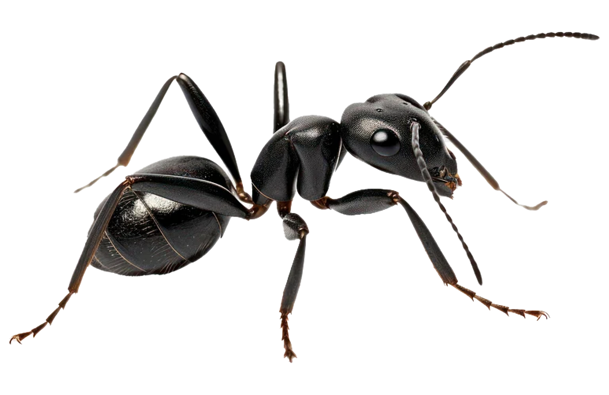

- history
- habitat
- diet
- friends
Ants are eusocial insects of the family Formicidae and, along with the related wasps and bees, belong to the order Hymenoptera.[2] Ants evolved from vespoid wasp ancestors in the Cretaceous period. More than 13,800 of an estimated total of 22,000 species have been described. They are easily identified by their geniculate (elbowed) antennae and the distinctive node-like structure that forms their slender waists.
